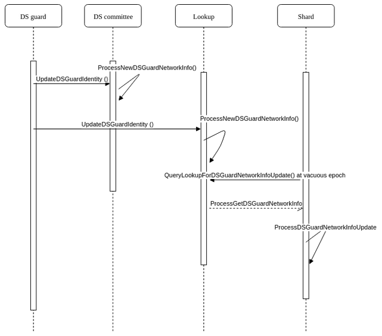

Mitigation measures
Guard Mode
Description
Guard mode is a special operating mode in Zilliqa. Guard mode is a safety feature that can be used at the start of the mainnet til mainnet is stable. Guard mode will ensure the following:
- Up to
n(for instance, 2/3) nodes in DS committee are controlled by Zilliqa Research - DS leader selection, in normal scenario and view change scenario, will only be done from nodes controlled by Zilliqa Research
- Up to
n(for instance, 1/3) nodes across all shards are controlled by Zilliqa Research
Guard mode is designed to be toggleable and does not interfere with standard protocol when not in guard mode.
Terminology
- DS guard - DS node controlled by Zilliqa Research
- Shard guard - Shard node controlled by Zilliqa Research
Operation
- To enable guard mode, set
GUARD_MODEtotrueinconstants.xml - Add
nDS guard public keys tods_guard.DSPUBKEYinconstants.xml - Add
nshard guard public keys toshard_guard.SHARDPUBKEYinconstants.xml
Design of DS guard and non-DS guard nodes
Normal operation
DS guard is designed to be statically placed in the DS committee. The first n nodes in the DS committee will be designated as DS guards. These do not change or shift during each DS consensus or view change while in guard mode.
| 1...n = DS guards (controlled by Zilliqa Research) | n+1...m = non-guard nodes |
|---|
DS Leader is selected from DS guards, by doing mod n rather than mod m.
Non-guard node joins the DS committee via PoW (according to DS difficulty). It will be emplaced starting from n+1 index. As per usual operation, the last few DS nodes (non-guards) will be ejected from the DS committee.
Note: The DS reputation feature (starting v5.0.0) also impacts DS committee member placement. Please refer to both DS MIMO and DS Reputation documents for more information on how DS committee membership is managed.
View change operation
When there is a view change, it is likely that a DS guard (leader) is faulty or the network failed to agree with what the DS guard (leader) proposed. In such a case, view change will happen. View change candidate leader will be selected from 1...n DS guards by doing mod n rather than mod m.
Upon view change completion, there is no shifting of DS guard nodes. The DS guards stay in place. Shard nodes who receive the VC block will also not adjust the DS committee.
The DS committee updates m_consensusLeaderID to the new leader and the protocol resumes.
Rebalancing for shards
In the event that there is a reduction in the number of shards, we ensure that the remaining shards will not be entirely made up of guards. To do this, we trim the overall number of shard guards to 2/3 of the expected population (e.g., 1200 out of 1800), and then complete the count with non-shard guards. In the case where there are insufficient non-guard nodes, shard guard nodes will fill up the remaining slots.
Keywords to look for in the logs:
DS leader:
trimmedGuardCount: [some value] trimmedNonGuardCount: [some value] Total number of accepted soln: [some value]
Example:
trimmedGuardCount: 80 trimmedNonGuardCount: 40 Total number of accepted soln: 120
Reducing shard guards
Reference: PR 1508
Note: This section may need to be revised once shard guard reduction is planned for the mainnet.
When we need to reduce shard nodes, we will need to adjust the following constants which dictate the min % of shard guards per shard.
<SHARD_GUARD_TOL>0.334</SHARD_GUARD_TOL>
The key idea to remove shard guard from shard is to remove <SHARDPUBKEY> from constants.xml during the upgrading.
For recovery and upgrading approach, you may follow the following testnet steps to conduct testing. The current steps remove 80 shard nodes (shard guards included).
Baseline testnet (eg. current latest release).
Bootstrap one or skip this if you are getting from persistence from mainnet
./bootstrap.py -c <latest release commit> -n 200 -d 50 --guard 34/102 -l 1 --host-network true --gentxn false --lookup-multiplier true --default-genesis 5 --extra-genesis 5 --port 33133 <original testnet name>
Upload persistence
./testnet.sh upload dev.k8s.z7a.xyz <original testnet name>
Recover and upgrade to a smaller testnet
./bootstrap.py -c <new commit> -n 120 -d 50 --guard 34/51 -l 1 --host-network true --gentxn false --lookup-multiplier true --default-genesis 5 --extra-genesis 5 --port 33133 --recover-from-testnet jh3420 --recover-from-cluster dev.k8s.z7a.xyz <new testnet name>
Best effort approach for electing shard guard as shard leader
Reference: PR 1513
A best effort approach for selecting shard guard as shard leader was introduced in the PR. Recall that whether or not we are in guard mode, the calculation of new shard leader is:
Leader index = last block hash % shard size
The new calculation is as follows:
Leader index = last block hash % shard size
while leader is not shard guard (iterate up to n times)
Hash = sha2(last block hash)
Leader index = Hash % shard size
n is defined in constant SHARD_LEADER_SELECT_TOL
Runtime validation
Guard mode is designed to run when the following assumption holds:
- Number of new DS node injected into shard >= number of allowed non-guard shard nodes
Using a simple local run as an example:
- Number of nodes: 20
- DS nodes: 10
- Shard size: 5
- DS MIMO: 2
| 10 DS Node (8 guards) | Shard 1: 5 Nodes (4 guards) | Shard 2: 5 Nodes (4 guards) |
|---|
In such a case, when the network is reduced from 2 shards to 1 shard (due to some reason), the injection phase will inject more nodes than the shard limit. There is no good solution around it. Hence, ValidateRunTimeEnvironment() checks for such a condition and logs fatal if it happens.
| 10 DS Node (8 guards) | Shard 1: 6 Nodes (4 guards) | No longer exists |
|---|
Changing network information of DS guard node
Purpose
Nodes (or, specifically, docker containers) can be terminated due to software or hardware reasons. Under normal operation without guard mode, faulty DS node(s) can be gracefully kicked out of the DS committee using regular shifting and view change if necessary. However, in guard mode, DS guards do not shift and stay in the DS committee indefinitely. As such, we can possibly lose a node forever as Kubernetes does not support static IP addressing.
As such, we have devised a simple protocol for the DS guard to rejoin and update the network about its new information.
Updating mechanism
- DS guard relaunches in a new pod
- DS guard enters the DS guard rejoin stage and syncs with lookup
- DS guard successfully enters
FinishRejoinAsDS() - As part of the finish rejoin process, DS guard broadcasts its new network information and other relevant information to the lookup and gossips to DS committee (pubkey, network info and timestamp)
- DS committee and lookup update their view of the DS committee
- Lookup stores the updated information
- At the next vacuous epoch, all shard nodes query the lookup for any new DS guard network update info, and set a flag to indicate that they are waiting for the new network information of DS guard
- Lookup will not respond if there is no new information
- Otherwise, lookup sends to requesting shard node the new DS guard network information. The lookup also signs the message.
- Requesting shard node verifies the signature and proceeds to update its view of the DS committee.
Testing procedures
Run 20 nodes testnet with guard mode enabled
Kill 2nd DS guard node
- netstat -antp | less
- Look for port 4002
- Get the process id
- kill -9 [pid]
Relaunch DS guard node 2 using
./tests/Node/test_node_rejoindsguardnode2Check that DS committee, lookup and shard nodes are aware of the DS guard's updated network information
- DS committee:
[update ds guard] DS guard to be updated is at index [indexOfDSGuard] [old network info] [new network info]- Shards:
[update ds guard][pubkey]new network info is [network info]- Lookup:
Received network info:
[update ds guard] DS guard to be updated is at index [indexOfDSGuard] [old network info] [new network info]Add to in-memory data structure:
[update ds guard] No existing record found for dsEpochNumber [ds epoch number]. Adding a new record Or [update ds guard] Adding new record for dsEpochNumber [ds epoch number]Send to shard node:
[update ds guard] Sending guard node update info to [requesting node]
Sequence Diagram

Design of shard guard and non-shard guard nodes
Shard guard is designed to ensure that across all shards there are sufficient Zilliqa-controlled nodes. These nodes are special as
- They do PoW with difficulty 1
- Their PoW submissions are given priority by DS committee over normal shard nodes' submissions
- They do not join DS committee
As per the Zilliqa protocol, shard nodes (guard and non-guard) perform PoW. A non-guard node may perform up to 2 rounds of PoW (one for DS and one for shard). However, a shard guard only performs PoW to enter shard.
After the PoW window is over, the DS committee will begin to compose the sharding structure. The DS leader, as per current protocol, will trim the sharding structure such that each shard has exactly COMM_SIZE number of shard nodes. During the trimming, shard guards are given priority, and non-shard guard nodes are trimmed from the structure first. With the trimmed list, the DS leader will then randomly assign each node (shard guard and non-shard guard) to its respective shard.
Inline code comments:
If total num of shard nodes to be trim, ensure shard guards do not get
trimmed. To do it, a new map will be created to include all shard
guards and a subset of normal shard nods
Steps:
1. Maintain a map that called "FilteredPoWOrderSorter". It will
eventually contains Shard guards + subset of normal nodes
2. Maintain a shadow copy of "PoWOrderSorter" called
"ShadowPoWOrderSorter". It is to track non-guards node.
3. Add shard guards to "FilteredPoWOrderSorter" and remove it from
"ShadowPoWOrderSorter"
4. If there are still slots left, obtained remaining normal shard node
from "ShadowPoWOrderSorter". Use it to populate
"FilteredPoWOrderSorter"
5. Finally, sort "FilteredPoWOrderSorter" and stored result in
"PoWOrderSorter"
Running in local test mode
Local scripts have been retrofitted and DS/shard guard node key pairs have been pre-generated in the python local script. To run guard mode, use tests/Node/pre_run_guard.sh instead of the regular pre_run script.
cd build && tests/Node/pre_run_guard.sh && ./tests/Node/test_node_lookup.sh && ./tests/Node/test_node_simple.sh
Test scenarios
- Normal operation with guard mode
- Build as per normal
- Enable guard mode
- Guard mode with view change at DS block consensus
- Build with VC1
- Enable guard mode
- Guard mode with view change at final block consensus
- Build with VC3
- Enable guard mode
Validating the results via sampling
- Check a DS guard node (e.g., node 1) to see whether or not it stays in DS committee indefinitely with no shifting
- Check a DS guard node to ensure DS leader is always among the DS guard nodes
- Check a shard guard node to ensure it never joins the DS committee
- Check a non-shard guard node to ensure it has the chance to join the DS committee
- Check view change in guard mode doesn’t shift the DS committee
- Check lookup for any abnormal behavior
Future todos
- How to gracefully transit out of guard mode? (Issue 336)
Rejoin Mechanism
This document will walk through joining and rejoining of different types of nodes.
New node joining / Existing shard node joining(Miner node was relaunched/restarted via launcher script)
- launch_docker.sh / launch.sh / start.sh download persistence from AWS S3 incremental db using
download_incr_db.py. It skips downloading microbBlocks and txBodies. More details of download_incr_db.py can be found here. - Above launcher script later starts the zilliqa process with
syncType = NEW_SYNC. - Zilliqa process retrieves Persistence Storage from dowloaded DB in (1).
- It regenerates the current state using base state and state-deltas already fetched from incremental db.
- syncType is not No_SYNC. so it blocks some messages that will be received as a healthy normal node.
- It starts synchronization with
Node::StartSynchronization.
Node::StartSynchronization
Send request to upper seeds (level2lookup 10- 14) so as to remove node IP from their relaxed blacklist, if any.
While Loop until syncType becomes NO_SYNC:
Fetch Latest DSBlocks and Latest TxBlocks from a random upper seed.
On receiving new TxBlock, fetch the corresponding state-deltas and calculate current state. Check whether it is a vacuous block, if so, after calculating state will move the state update to disk.
If not vacuous epoch, a) Fetch the latest Sharding Structure from a random upper seed and identify if already part of any shard. b) If it's not part of any shard, then it's indeed a new miner then go back to step (4). c) Otherwise, already part of one of shard. Set my shard members and shardId. Set
sycType = NO_SYNCand send request to shard peers to remove IP from their relaxed blacklist.
NOTE: If connection to node fails with error
EHOSTDOWNorECONNREFUSED, it's blacklisted inrelaxedcategory. Otherwise in strict category.
d) Start next Tx epoch where it initializes node variables like m_consensusID, m_consensusLeaderID, etc. Identify being BACKUP or leader, initializes Rumor Manager and starts with MicroBlockConsensus. The normal node now successfully joined the network as Shard Node.
If vacuous epoch, fetch Latest DS Committee Info and send request to a random upper seed to let him know when to start pow.
On receiving notification message from seed, start Init Mining and submit PoW.
If received DSBlock within timeout and finds himself in sharding information, change
syncType = NO_SYNC. Stop blocking messages. The normal node now successfully joined the network as Shard Node .If timedout, a) Try to fetch latest DSBlock from random seed. If successfully got new DSBlock means lost pow this time. It will continue syncing until next vacuous epoch as above by invoking
Node::StartSynchronization. b) If failed to get new DSBlock, setsyncType = NORMAL_SYNCand triggersNode::RejoinAsNormal.
Node::RejoinAsNormal
- Set
SyncType = NORMAL_SYNC. - Download Persistence from S3 incremental DB.
- Retrieves Persistence Storage from dowloaded DB in step (2).
- It regenerates the current state using base state and state-deltas already fetched from incremental db.
- syncType is not No_SYNC. so it blocks some messages that will be received as a healthy normal node.
- It starts synchronization with
Node::StartSynchronization.
Shard node - Daemon starts the killed zilliqa process (applicable only for zilliqa nodes)
- Daemon starts the process with syncType in previous run.
i.e. SyncType = 5 - Its as good as recovery of any node from exising local persistence here onwards. Refer Recovery.
Existing DS node joining ( DS node was relaunched/restarted via launcher script)
- launch_docker.sh / launch.sh / start.sh download persistence from AWS S3 incremental db using
download_incr_db.py. It skips downloading microBlocks and txBodies. More details of download_incr_db.py can be found here. - Above launcher script later starts the zilliqa process with
syncType = NEW_SYNC. - Zilliqa process retrieves Persistence Storage from dowloaded DB in step (1).
- syncType is not
NO_SYNC. so it blocks some messages that will be received as a healthy normal node. - It regenerates the current state using base state and state-deltas already fetched from incremental db.
- Check if node is part of current ds committee, If so
a) Save coin base for final block and all microblocks, from last DS epoch to current TX epoch.
b) Send request to upper seeds (level2lookup 10- 14) so as to remove node IP from their relaxed blacklist, if any.
c) If any of the coinbase is missing for any epoch or any shard, request cosigs for them from a random upper seed.
d) Set
syncType = DS_SYNC. - It starts synchronization with
DirectoryService::StartSynchronization.
DirectoryService::StartSynchronization
- Send request to upper seeds (level2lookup 10- 14) so as to remove node IP from their relaxed blacklist, if any.
- While Loop until SyncType becomes NO_SYNC:
- Fetch Latest DSBlocks and Latest TxBlocks from a random upper seed.
- On receiving new TxBlock, fetch the corresponding statedeltas and calculate current state. Check whether it is a vacuous block, if so, after calculating state will move the state update to disk.
- If node is dsguard and if rejoining was triggered because the pod/instance was deleted i.e.
m_ds.m_dsguardPodDelete = true(Refer DSGuard Pod Deletion), then invokesFinishRejoinAsDSonly if its vacous epoch. - Otherwise, trigger
FinishRejoinAsDSimmediately.
DirectoryService::FinishRejoinAsDS
- Recheck if node is still part of ds committee. If not triggers
RejoinAsNormal. - If node is awaiting sending new IP to network i.e.
m_ds.m_awaitingToSubmitNetworkInfoUpdate = true(Refer DSGuard Pod Deletion), send new IP to the network. - If current epoch is already first tx epoch of new ds epoch, fetch the sharding structure again.
- If not vacuous epoch, start next Tx epoch where it initializes node variables like m_consensusID, m_consensusLeaderID, etc. Identify being BACKUP or leader, initializes Rumor Manager and starts with state
MICROBLOCK_SUBMISSION. - If vacuous epoch, start new ds epoch and starts with state
POW_SUBMISSION.
DS node - when VC Precheck fails
VC Precheck fails if next tx block or ds block got mined, but node failed to reach consensus for that block.
After which is triggers DirectoryService::RejoinAsDS.
DirectoryService::RejoinAsDS
- Set
SyncType = DS_SYNC. - Download Persistence from S3 incremental DB.
- It retrieves Persistence Storage from dowloaded DB in step (2).
- It starts synchronization with
DirectoryService::StartSynchronization.
DS node - Daemon starts the killed zilliqa process (applicable only for zilliqa nodes)
- Daemon starts the process with syncType in previous run.
i.e. SyncType = 5 - Its as good as recovery of any node from existing local persistence here onwards. Refer Recovery
New Seed Node joining
- launch_docker.sh / launch.sh / start.sh download persistence from AWS S3 incremental db using
download_incr_db.py. More details of download_incr_db.py can be found here here. - Above launcher script later starts the zilliqa process with
syncType = NEW_LOOKUP_SYNC. - Zilliqa process retrieves Persistence Storage from dowloaded DB in step (1).
- It regenerates the current state using base state and statedeltas already fetched from incremental db.
- SyncType is not
NO_SYNC. so it blocks some messages that will be received as a healthy seed node. - It starts syncronization with
Lookup::InitSync.
Lookup::InitSync
- While Loop until SyncType becomes
NO_SYNC: - Fetch Latest DSBlocks and Latest TxBlocks from a random upper seed.
- On receiving new TxBlock, fetch the corresponding statedeltas and calculate current state. Check whether it is a vacuous block, if so, after calculating state will move the state update to disk.
- Fetch UnavailableMicroBlockHashes for the newly fetched txBlocks from random lookup nodes. And also check for any missing mbs from last N txBlocks and fetch them from random lookup nodes, if any. (See
Lookup::CommitTxBlocks) - Fetch latest DSInfo and Set
syncType = NO_SYNC, then seed is ready again.
Seed Node Rejoining (Also applicable for newlookup / level2lookup nodes)
Seed nodes might miss receiving any final block or ds block from multiplier (See more at ), in which case it triggers RejoinAsNewlookup to rejoin.
- Set
syncType = NEW_LOOKUP_SYNC. - If the number of missing final block are over NUM_FINAL_BLOCK_PER_POW (extreme bound), rejoin from S3 incremental db will be used.
i.e. RejoinAsNewlookup(fromLookup = false) - Otherwise, rejoin by fetching missing final blocks from random lookup nodes.
i.e. RejoinAsNewlookup(fromLookup = true)
Lookup::RejoinAsNewlookup
If fromLookup = true:
- Invoke
Lookup::StartSynchronization
If fromLookup = false:
- Download Persistence from S3 incremental DB.
- It retrieves Persistence Storage from dowloaded DB in step (1).
- It starts syncronization with
Lookup::InitSync.
Lookup::StartSynchronization
- It fetches latest TxBlock and DSBlock from a random upper seed.
- On receiving new TxBlock, fetch the corresponding statedeltas and calculate current state. Check whether it is a vacuous block, if so, after calculating state will move the state update to disk.
- Fetch UnavailableMicroBlockHashes for the newly fetched txBlocks from random lookup nodes. And also check for any missing mbs from last N txBlocks and fetch them from random lookup nodes, if any. (See
Lookup::CommitTxBlocks) - Fetch latest DSInfo and Set
syncType = NO_SYNC, then seed/lookup is ready again.
Lookup Node Rejoining
Lookup nodes might miss receiving any final block or ds block from network, in which case it triggers RejoinAsLookup to rejoin.
Lookup::RejoinAsLookup
- Invoke
Lookup::StartSynchronization.
Recovery Mechanism
Recovery enables zilliqa controlled nodes to be recovered if they go out of sync with network.
Recovery mechanism can be used with different nodes of types - dsguard, shard guard, other normal nodes,
lookup, newlookup and level2lookup.
Procedure :
TYPE could be normal, lookup, new, newlookup, level2lookup, dsguard
INDEX needs be a valid integer
UPLOAD_TYPE could be normal, lookup, new, newlookup, level2lookup, dsguard to indicate the upload node type
UPLOAD_INDEX needs be a valid integer, to indicate to upload node index
Above script will download persistence from the specified UPLOAD_TYPE node and restart the zilliqa process using daemon (already running in container) with syncType = RECOVERY_ALL_SYNC.
Refer how to recover for details.
Based on the type of node being recovered and its existing state in current network, it will be recovered as detailed out below.
DS Guard Node Recovery
- Kills Zilliqa process, and suspend the new process re-launching.
- Testnet script downloads Persistence Storage.
- Resumes to launch Zilliqa process with
syncType 5i.e.RECOVERY_ALL_SYNC - Zilliqa process retrieves Persistence Storage downloaded earlier by testnet script in step (2).
- syncType is not
NO_SYNC. So it blocks some messages that will be received as a healthy node. - Checks if node is part of current ds committee, (which will always be the case for dsguards)
a) Save coin base in memory (not saved to persistence) for final block and all microblocks, from last DS epoch to current TX epoch .
b) Send request to upper seeds
level2lookup 10- 14to remove node IP from their relaxed blacklist, if any. c) If any of the coinbase is missing for any epoch or any shard, request cosigs for them from a random upper seed. d) Setm_shardIDandm_consensusMyID. - Invokes
WakeupAtTxEpochwhich will start withFinalBlockConsensus.
There are two possibilities hereafter:
- Start consensus on next block successfully and rejoined.
- We missed new final block during recovery process in which case it will go for VC Precheck failure followed by triggering of
RejoinAsDS. Refer Rejoin
DS Guard Node Pod/Instance Deletion
- On instance or Pod deletion of dsguard, new pod is assigned to that dsguard and zilliqa process is launced with
syncType = GUARD_DS_SYNC. - Set
m_ds.m_awaitingToSubmitNetworkInfoUpdate = true. - Set
m_ds.m_dsguardPodDelete = true. - Triggers
DirectoryService::RejoinAsDS.Refer Rejoin
Shard Guard Node Recovery
- Kills Zilliqa process, and suspend the new process re-launching.
- Testnet script downloads Persistence Storage.
- Resumes to launch Zilliqa process with
syncType 5i.e.RECOVERY_ALL_SYNC - Zilliqa process retrieves Persistence Storage downloaded earlier by testnet script in step (2).
- syncType is not
NO_SYNC. So it blocks some messages that will be received as a healthy node. - Checks if node is part of sharding structure,
a) Set
m_shardIDandm_consensusMyID. - Invokes
WakeupAtTxEpochwhich will start with state onWAITING_FINALBLOCK. - Send request to upper seeds and his peers to remove node IP from their relaxed blacklist, if any.
There are two possibilities hereafter:
- Receives next final block and joined back.
- We missed new final block during recovery process in which case it will trigger
RejoinAsNormal. Refer Rejoin
Shard Guard Node Pod/Instance Deletion
- On instance or Pod deletion of dsguard, new pod is assigned to that dsguard and zilliqa process is launced with
syncType = RECOVER_ALL_SYNC. - Node don't receive any messages from peers because of IP change and is stuck.
- We can recover such node in next ds epoch, after which it will not be part of any shard and will trigger
RejoinAsNormal**. Refer Rejoin
Other Node (Not part of ds committe or any shard)
- Kills Zilliqa process, and suspend the new process re-launching.
- Testnet script downloads Persistence Storage.
- Resumes to launch Zilliqa process with
syncType 5i.e.RECOVERY_ALL_SYNC - Zilliqa process retrieves Persistence Storage downloaded earlier by testnet script in step (2).
- syncType is not
NO_SYNC. So it blocks some messages that will be received as a healthy node. - If node is not part of sharding structure or current ds committee, It triggers
RejoinAsNormal. Refer Rejoin
NewLookup / Level2Lookup Node Recovery
- Kills Zilliqa process, and suspend the new process re-launching.
- Testnet script downloads Persistence Storage.
- Resumes to launch Zilliqa process with
syncType 5i.e.RECOVERY_ALL_SYNC - Zilliqa process retrieves Persistence Storage downloaded earlier by testnet script in step (2).
- syncType is not
NO_SYNC. So it blocks some messages that will be received as a healthy node. - Invokes
WakeupAtTxEpochwhich will start with state onWAITING_FINALBLOCK.
There are two possibilities hereafter:
- Receives next final block and joined back.
- We missed new final block during recovery process in which case it will trigger
RejoinAsNewlookup. Based on number of final blocks missed over period of recovery, Rejoin will be either based out of incremental db or it will continue syncing the missing blocks from lookup. For details refer Rejoin
Lookup Node Recovery
- Kills Zilliqa process, and suspend the new process re-launching.
- Testnet script downloads Persistence Storage.
- Resumes to launch Zilliqa process with
syncType 5i.e.RECOVERY_ALL_SYNC - Zilliqa process retrieves Persistence Storage downloaded earlier by testnet script in step (2).
- syncType is not
NO_SYNC. So it blocks some messages that will be received as a healthy node. - Invokes
WakeupAtTxEpochwhich will start with state onWAITING_FINALBLOCK.
There are two possibilities hereafter:
- Receives next final block and joined back.
- We missed new final block during recovery process in which case it will trigger
RejoinAsLookup. Refer Rejoin
View Change
This document describes the view change process in Zilliqa. For automation of viewchange tests, please refer to this link
- Description
- Usage
- Terminology
- Trigger conditions
- Setup
- Procedure
- Test scenario setup
- General test scenario
- Special test scenario
- Test macro
- Known issues
Description
This version of view change supports random candidate leader selection and re-selection of the candidate leader if it is faulty. It also fixes the issue where the wrong ds leader is ejected to the back of the queue, which is the result of a previous hotfix that fixes view change issue after random DS leader election.
To conduct view change, the general steps are as follows:
- A stall in consensus must have happened
- Network enters into view change state
- Candidate leader leads the view change consensus using PBFT
- Backups validate the announcement
- View change consensus is reached
- Re-run the stalled consensus
Usage
Allows election of a new leader when the network cannot reach an agreement of the next state and stalled the consensus process
Terminology
- Candidate leader: Known as the proposed leader, the candidate leader will lead view change consensus round
- Faulty leader(s): The current or previous DS leader(s) that is deemed to be faulty
- Ejection: Eject the faulty leader(s) to the back of the ds committee. It will then be fully kicked out of the DS committee after the next DS consensus
Trigger conditions
- Node entered “RunConsensusOnDSBlock” but DS block consensus did not complete within the time stipulated
- Node entered “RunConsensusOnFinalBlock” but final consensus did not complete within the time stipulated
- Node entered “RunConsensusOnViewChange” but view change consensus did not complete within the time stipulated
Setup
[VC Block header]Removal of candidate leader index as the index will be adjusted after view change and will be obsolete[VC Block header]Addition ofvector<pair<PubKey, Peer>>for tracking all the faulty leaders[Macro]Add the related test scenario macro. Refer to test macros section.
Procedure
Consensus stalled during DS consensus or Final block consensus
View change condition variable is triggered
Enter view change consensus
[Precheck]Enter the precheck phase. DS nodes contact lookup to ask for new blocks[Precheck]If no new blocks (DS and FB) is obtained, proceeds to do view change[Precheck]Else, rejoin as a DS nodeAll nodes calculate the new candidate leader index using
CalculateNewLeaderIndex()CalculateNewLeaderIndex()calculates candidate leader index usingH(finalblock or vc block hash, vc counter) % size (or num of DS guard) If a previous vc block (for current consensus) exists, use vc block hash. Else use final block hash. If new candidate leader index is current faulty leader, re-calculate using H(H(finalblock or vc block hash, vc counter)) repeatedly till an index is not the current faulty leader.Candidate leader leads the consensus round
Backups validate leader announcement
View change consensus completed/stalled a. If stalled, wait for timeout and re-run view change consensus with a new candidate leader
Remove faulty leaders (found in Faulty leader vector) from DS Committee
Add faulty leaders (found in Faulty leader vector) to the back DS Committee (if not in guard mode)
Recalculate
m_consensusMyIDby searching for own node inside the DS committeeSet new DS
m_consensusLeaderIDStore VC block to persistent storage
If stalled consensus is at final block consensus, send the VC block to the lookup and shard nodes. Lookups and shard nodes update the ds composition respectively
If stalled consensus is at DS block consensus, hold and collect VC block(s) to the lookup and shard nodes.
Re-run stalled consensus (DS block or final block consensus). If re-run is at final block consensus, gas limit will be adjusted using exponential backoff algorithm.
Consensus completed
If DS block consensus, concatenate the DS block with VC block(s) and send to lookup and shard nodes
Lookup and shard nodes will process VC block(s) linearly followed by DS block
Test scenario setup
A total of 6 general view change tests is built into the codebase as macro. To perform the test,
Remove the build folder
For a single test scenario
./build.sh vc<1-6>For multiple test scenario
./build.sh vc<1-6> vc<1-6>Build twice as the
ccachemay be hindering the macros
General test scenario
Single failure
vc1- DS leader stalled at DS block consensusvc3- DS leader stalled at Final block consensus
Multiple failures (after view change is completed)
vc2- DS leader stalls at DS block consensus and 2 candidate leaders stall at DS block consensusvc4- DS leader stalls at Final block consensus and 2 candidate leaders stall at Final block consensus
Multiple failures (with view change consensus failure)
vc1 vc5- DS leader stalls at DS block consensus and candidate leaders stall at View Change consensusvc3 vc5- DS leader stalls at Final block consensus and candidate leader stall at View Change consensusvc1 vc6- DS leader stalls at DS block consensus and 2 candidate leaders stall at View Change consensusvc3 vc6- DS leader stalls at Final block consensus and 2 candidate leaders stall at View Change consensus
VC Pre-check failed
vc7- When a DS backup is lagged (ds epoch) and the whole network did not enter into view change, check whether the node will rejoin as DS or not. Node withconsensusMyID3 will stall for 45s and enter view change to simulate node lagging behind.vc8- When a DS backup is lagged (tx epoch) and the whole network did not enter into view change, check whether the node will rejoin as DS or not. Node withconsensusMyID3 will stall for 45s and enter view change to simulate node lagging behind.
Special test scenario
Test plan for merging DS Microblock into FinalBlock consensus
Objective: Check fetching missing txn Scenario : DS leader has some txn that one of the backups doesn't have Adoption : Letting one of the backups accept fewer txns from lookup comparing to the others
Objective: Check View Change due to dsblock check failure within FinalBlock consensus Scenario : DS leader has some txn that all of backups don't have Adoption : Letting all of the backups accept fewer txns from lookup comparing to the leader
Objective: Check fetching missing microblock Scenario : DS leader has more microblock received than one of the backups Adoption : Letting one of the backups refuse some Microblock submission
Objective: Check View Change after fetching missing microblock Scenario : DS leader has more microblock received than all of the backups Adoption : Letting all of the backups refuse some Microblock submission
Objective: Check View Change due to TxBlock check failure within FinalBlock consensus Scenario : DS leader composed invalid TxBlock Adoption : Done by composing wrong state root hash
Test macro
vc1- stall at the start of ds consensus for 1 timevc2- stall at the start of ds consensus for 3 timesvc3- stall at the start of final consensus for 1 timevc4- stall at the start of final consensus for 3 timesvc5- stall at the start of vc consensus for 1 timevc6- stall at the start of vc consensus for 2 timesvc7- Node withconsensusMyID 3will stall for 45s and enter view change to simulate node lagging behind at DS block consensus. Node will precheck and rejoin as DS. Network will not undergo view changevc8- Node withconsensusMyID 3will stall for 45s and enter view change to simulate node lagging behind at Final block consensus. Node will precheck and rejoin as DS. Network will not undergo view changedm1- letting one of the backups accept fewer txns from lookup comparing to the othersdm2- letting all of the backups accept fewer txns from lookup comparing to the leaderdm3- letting one of the backups refuse some Microblock submissiondm4- letting all of the backups refuse some Microblock submissiondm5- compose the wrong TxBlock, done by composing wrong state root hash in the TxBlockdm6- compose the wrong DSMicroBlock, done by composing wrong tranhashes in the DSMicroBlockdm7- letting the ds leader accept fewer txns from lookup comparing to the othersdm8- letting the ds leader and half of the ds committee members accept fewer txns from lookup comparing to the othersdm9- letting the ds leader and half of the ds committee members refuse some MicroBlock submission
Known issues
VC7andVC8require uploading of persistent storage from lookup. However, this process is not automated. Hence, these two tests will require manual intervention.- Run test
- Upload lookup incremental DB at epoch 5
- Observe DS node with
consensusMyID3 goes into view change and pre-checking - Check for invocation of
RejoinAsDS()andFinishRejoinAsDS()
DM3not working due to constant settings. This is not an issueDM8andDM9cannot be accurately validated using script
Transaction Backup
Diagnostic Data
We store in LevelDB a limited amount of some operational data about the network that is intended for use when diagnosing any issues with the mainnet.
Globally, the amount of data stored is controlled by the constant MAX_ENTRIES_FOR_DIAGNOSTIC_DATA, which is usually set to either 25 or 50.
This is the current data stored for diagnostic purposes:
| LevelDB location | Data stored | Storage timing | Tool for data extraction |
|---|---|---|---|
| persistence/diagnosticNodes | DS and shard peers | Every vacuous epoch | getnetworkhistory |
| persistence/diagnosticCoinb | Coinbase values and distribution | Every DS block | getrewardhistory |
To use the diagnostic tools:
- Make sure there is a
persistencesubfolder in your current directory. - Make sure
persistence/diagnosticNodespersistence/diagnosticCoinbcontains the data you want to extract. - Run
getnetworkhistory <name of output CSV file>orgetrewardhistory <name of output CSV file>. - Output CSV file will appear in the current directory. Use Excel or LibreOffice Calc to open it.
Internal API
This API server runs on port 4301 by default on a node locally (i.e., cannot be accessed from outside).
Available Methods
AddToBlacklistExclusion: Can be used to add an API to the blacklist exclusion list (or whitelist).RemoveFromBlacklistExclusion: Can be used to remove an API from the blacklist exclustion list.GetNodeState: Used to get the state of the node, e.g., POW, COMMIT_DONE etc.GetEpochFin: Tells the epoch number for the lookup for which the microblocks and txns have been received.GetDSCommittee: Returns the list of IPs and PubKeys of the current DS Committee.IsTxnInMemPool: Used to query local mempool of the nodes. Can tell, given a particular txnhash, if it is in mempool and why (e.g., nonce too high or gas price low).